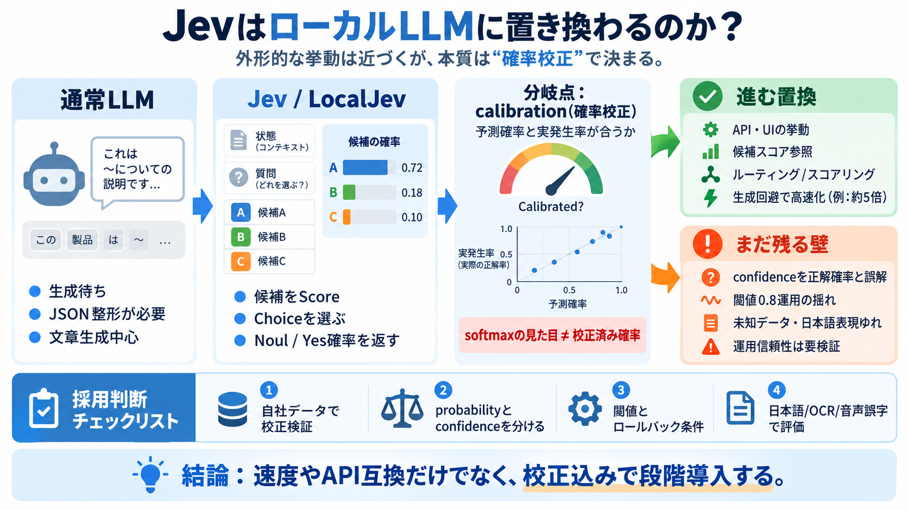

生成しない意思決定
Jevは置き換わるのか
文章生成ではなく「状況を評価し、候補を選ぶ／確率を返す」Jevが、ローカルLLMにどこまで置き換わるのかを整理します。
答え（先出し）
外形的な挙動は置換が進むが、「同等の本質」まで断言は未完です。
焦点
速度・API互換より、確率校正（calibration）と運用の信頼性が分岐点です。

文章生成ではなく「状況を評価し、候補を選ぶ／確率を返す」Jevが、ローカルLLMにどこまで置き換わるのかを整理します。
Jevは、状態と質問、選択肢を受け取り、候補ごとの確率分布やconfidenceを返す意思決定向けモデルです。
読み解きの鍵は、候補（Choice）をスコア（Score）し、Yes確率（Noul）やconfidenceを返すという「意思決定の設計」です。
LocalJev系は候補スコア→確率分布の形を再現しやすい一方、softmaxの見た目が校正済み確率と一致するとは限らない点が差になります。
投稿は、confidenceを「正解である確率」と誤解しないよう明確に注意します。confidenceは“確信度”という捉え方だけでは危険です。
例として、文章生成やJSON生成をやめることで約5倍速くなる検証が言及されています。候補スコアを直接読む設計が効きます。
投稿では、速い結果でも一致件数・検証条件が限定的で、未知データや多様入力での安定性は保証されない点がポイントです。
英語中心の評価結果が、そのまま日本語でも成立するとは限りません。主語省略、敬語、否定の重なりなどが効きます。
ローカル側の取り組みでは、候補スコアを直接読むことでChoice相当の挙動を再現しやすくなり、ブラウザデモなども登場しています。
投稿の整理では、内部詳細・校正厳密性・未知業務への汎化・マネージド品質までを、ローカル実装が完全に同等再現できているとは言い切れません。
速度やAPI互換だけで採用すると失敗しやすいので、校正検証・閾値調整・誤判定コストの見積もりを前提に議論すべきです。
この投稿を踏まえると、比較・検証の中心は「確率校正」と「confidence/probabilityの意味の取り違え防止」です。
用語メモ（bilingual）：Choice（候補選択）／Score（順序付き評価）／Noul（Yes確率）／calibration（確率校正）/ confidence（集中度指標）
No references found